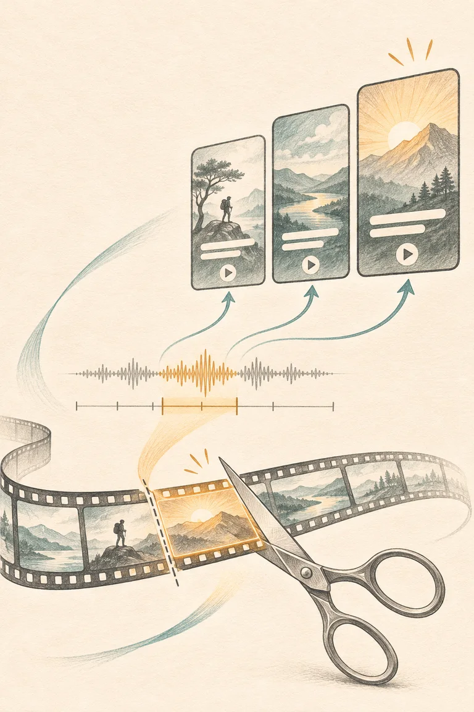

Relent AI
Building Relent AI, from long videos to captioned Shorts

I built Relent AI to make long videos easier to use. A video can contain a good explanation, a funny story, or a useful answer buried twenty minutes in. Finding that moment is one task. Turning it into a vertical clip with readable captions, a title, and a description is several more. I wanted to start with a YouTube link and end with clips I could review and download.
The project began as a toolkit for understanding video through transcripts, summaries, and questions about what was said. For Shorts Studio, I narrowed the workflow to one concrete job. Give Relent a finished YouTube video, let it find candidate moments, and get up to ten captioned vertical clips. That narrower goal gave me a clear way to test whether the system actually worked. I could open the result, play a clip, read the captions, and jump back to the original timestamp to see what the cut preserved.
A transcript became the interface between AI and video editing
The Shorts workflow starts by validating the link and downloading the source with yt-dlp. FFprobe checks that the file contains both audio and video and that its duration fits the supported range. Relent then converts the speech into timestamped words. Those timestamps connect what the speaker says to the exact place in the video where they say it.
I used that connection to separate choosing a clip from rendering a clip. The backend first groups timestamped words into candidate windows. It tries to end a candidate at a sentence boundary and avoids overlapping windows. The ranking step then selects from those candidates. The Groq-backed mode asks a language model to prefer a strong opening, a self-contained idea, and a payoff. It receives excerpts identified by candidate IDs. The backend validates the IDs and takes the actual cut times from its own transcript data.
This design gave the model a specific task. It could judge which moment sounded interesting, while the application kept control over which portion of the source could be exported. A model can write a convincing title even when it misunderstands a clip. Keeping the candidate ID and source range in the result makes that mismatch easier to spot during review.
| Stage | What Relent produces |
|---|---|
| Ingest | A checked source video with audio and a known duration |
| Transcribe | Timestamped words tied to the original audio |
| Select | Distinct candidate clips with a source time range and publishing text |
| Render | Downloadable 9:16 MP4s, burned-in captions, and batch metadata |
The final stage uses FFmpeg to cut and encode each clip as a 720 × 1280 MP4. The layout keeps the original picture in view against a blurred background, preserves the speaker’s voice, and adds captions over the video. The React interface shows the original time range alongside the preview and lets users download the MP4 or copy the publishing text. I also made the backend write a batch in a temporary workspace and publish it only after rendering finishes. That keeps a failed job from appearing as a finished set of clips. Repository and implementation
The Windows run changed the architecture
The early pipeline looked complete in isolated tests. A real run on my Windows laptop exposed everything between a successful API call and a usable export.
First, the browser loaded the app while the backend could not find FFmpeg. I installed a Windows build directly, verified both FFmpeg and FFprobe, and set their location in the PowerShell session that launched the server. Later, Windows reported that my system drive was out of space. The project already lived on a secondary drive, so I redirected the process’s temporary files there as well. Getting the same startup command to work the next day became part of making the project usable.
The more interesting issue was a connection failure during transcription. Groq’s model-list endpoint returned HTTP 200, and a tiny audio upload also succeeded. Uploading part of a real video failed. Those checks established that the credentials and basic connectivity worked. They left the behavior of a longer request as the thing to investigate.
I switched the upload to shorter, compressed MP3 chunks and added a retry for a dropped connection. When the Windows run still failed, I added local transcription with Faster-Whisper. FFmpeg decodes the source to 16 kHz mono PCM, and Whisper runs on the CPU. This also let the application reuse the FFmpeg installation it already needed for rendering. On the next run, transcription completed, but the separate Groq request for clip selection disconnected. I moved selection into the local path too.
Local selection favors sections with more continuous speech and builds the publishing text from transcript excerpts. It can finish without a Groq key once the source and model are available. Its scoring is simpler than the model-based ranking. A dense passage can outrank a slower setup that leads to a better punchline. I can see that tradeoff immediately in a batch of stand-up clips, where pauses and audience reactions are part of the performance. Initial Shorts Studio pull request · Local processing follow-up
Ten playable clips exposed a second kind of failure
The local path produced ten clips from a roughly twenty-minute source on my Windows machine. I could play a clip in the browser, see the source time range, and download it. The captions and descriptions still appeared in a different language from the English output I wanted.
The first version used the transcript directly for the captions and publishing text. If Whisper recognized the speech in a different language or script, that choice flowed through every part of the output. I changed the local pipeline to request English translation from Whisper while keeping the original audio. A later batch still showed mixed-script output, so English captions on that source are an open quality issue. Burned-in captions make this especially visible because correcting the text requires rendering the clip again.
That experience changed how I think about testing an AI feature. A passing request and a valid MP4 tell me the system ran. A clip I can publish also needs readable captions, a faithful description, and a cut that makes sense on its own. Those qualities are easiest to check when I can trace the output back to a specific section of the source. English translation change
What I would improve next
I want to make the review step faster. A preview that shows candidate boundaries and caption text before rendering would let me catch a cut that starts mid-story or a mistranslated line before waiting for a full batch. I would also like to test caption quality on a small set of Hindi, Hinglish, and English clips and review the rendered videos alongside the original audio. That would give me a concrete way to judge whether a change improves the text people actually read.
The part of Relent I’m most interested in now is the handoff from a model’s guess to an editable result. The model helps interpret speech or select a moment. The rest of the system has to make that choice visible, preserve the source, and produce something I can review. Relent made that handoff tangible for me. A batch of short videos gave me a much clearer view of the engineering than a successful model response ever did.